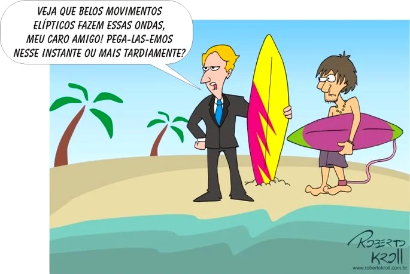
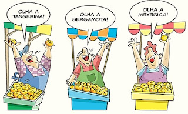

Variação linguistica
Nesse documento serão abordadas as variações linguísticas, e o que ela é. Variação linguística é um fenômeno que acontece quando uma mesma língua é falada de maneira distinta, seja na fala ou na escrita. (CASTRO, Luana). ela é dividida em 4 classes: Histórica, Social, Regional e Estilo.
Histórica
Essa variação linguística acontece com a transformação da língua através do tempo (OSHIO, Raquel 2022) bons exemplos seriam, farmácia com “PH” pois antigamente farmácia se escrevia com “PH” e hoje em dia por causa da variação histórica se escreve com “F”. Ou você que sua primeira versão foi vossa mercê que evoluiu para você e nos dias atuais você. (Noslen, 2016).
FIGURA 1 - Charge sobre variação histórica

(disponível em:http://fronteiraslinguisticas.blogspot.com/2011/04/exemplo-de-variacao-historica.html)
Social
A variação linguística social é aquela que quando utilizada por tal grupo social pode mudar por alguns motivos como cultura, preferências ou hábitos. Por exemplo, os surfistas, funkeiros e skatistas vão falar diferentes uns dos outros, pois são grupos sociais diferentes com gírias diferentes. (NEVES, Flávia).
(Disponível em: https://www.todamateria.com.br/variacoes-linguisticas/.)
(Disponível em:“ Tia Nuza “Variação Regional de https://www.youtube.com/watch?v=jrzTUbPlXCU)
Estilo
A variação linguística de estilo se refere a forma que uma língua é utilizada em diferentes contextos sociais e comunicativos usando a linguagem formal ou informal, exemplo se uma pessoa fosse apresentar seu TCC e começasse a usar a linguagem informal, esse tipo de linguagem não seria o ideal para a situação, ou em uma festa entre amigos alguém começasse a usar a linguagem formal para conversar, em ambos os exemplos não seria o correta o estilo de fala, pois depende de situação e local (OSHIO, Raquel).
REFERENCIAS
Luana Castro Alves Perez, “Variação linguística – A língua em movimento” Portugues .Disponível em : https://www.portugues.com.br/redacao/variacao-linguistica-lingua-movimento.html#:~:text=Voc%C3%AA%20sobre%20o%20que%20%C3%A9,altera%C3%A7%C3%B5es%20 feitas%20por%20 seus%20 falantes. Acesso em : 19 de Março de 2023.
Professor Noslen “Variação Linguística [Prof Noslen]” Youtube, 11 de abril de 2016. Disponível em : https://www.youtube.com/watch?v=6fBOVygtNoU Acesso em : 19 de Março de 2023.
Flávia Neves, “Variação linguística: o que é e exemplos” Norma Culta. Disponível em : https://www.normaculta.com.br/variacoes-linguisticas/ Acesso em : 19 de Março de 2023.
Fronteiras linguísticas. Exemplo de Variação Histórica http://fronteiraslinguisticas.blogspot.com/2011/04/exemplo-de-variacao-historica.html. Acesso em : 19 de Março de 2023.
Toda matéria. Variações Linguísticas https://www.todamateria.com.br/variacoes-linguisticas/ Acesso em : 19 de Março de 2023.
Youtube. Variação Regional de Vocabulário https://www.youtube.com/watch?v=jrzTUbPlXCU Acesso em : 19 de Março de 2023.
Raquel Oshio ,”Variaçao linguistica: o que são, classificação e exemplos"Estratégia Vestibular . Disponível em : https://vestibulares.estrategia.com/portal/materias/portugues/figuras-de-palavra/#O-que-sao-Figuras-de-Palavra. Acesso em 18 de março de 2023